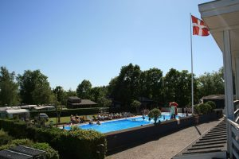

Hvem er dette for?
Erhvervs- og uddannelsescenteret udbyder en vifte af aktiviteter målrettet uddannelse og beskæftigelse til unge/voksne med en neuroudviklingsforstyrrelse i alderen fra 16 til 60 år
.Erhvervs- og uddannelsescenteret udbyder en vifte af aktiviteter målrettet uddannelse og beskæftigelse til unge/voksne med en neuroudviklingsforstyrrelse i alderen fra 16 til 60 år
.Erhvervs- og uddannelsescenteret har en flerfaglig personalegruppe bestående af håndværkere, pædagoger, lærere og psykologer - alle med en bred arbejdsmæssig erfaring, hvilket vi mener er værdifuldt i forhold til, at vi skal afspejle den fremtid og virkelighed, deltagerne kommer til at møde ude på virksomheder og uddannelsessteder.
Aktiviteterne består af:
Alle forløb starter med en visitationssamtale, hvorefter der udarbejdes en forløbsbeskrivelse med pris, opstartstidspunkt og indhold for det enkelte forløb. Vi tilbyder i sammenhæng med disse forløb, at man derudover kan tilkøbe udarbejdelse af en psykologisk funktionsudredning samt evt. psykoedukativt samtaleforløb med psykolog relateret til uddannelse- og arbejdsmarked.
Tilgang. Centerets neuropædagogiske tilgang betyder bl.a., at alle forløb på Erhvervscenteret er individuelt tilrettelagte. De bliver, i det omfang det er muligt, sammensat ud fra deltagerens ønsker. Endvidere tages hensyn til den enkeltes udfordringer, behov og kompetencer samt de mål, deltager og kommune har for forløbet.
Formål. Det overordnede mål for alle forløb er at afklare og beskrive den enkelte i forhold til erhverv og/eller uddannelse. Vi afdækker og bekriver de kompetencer, deltageren bør have/har brug for at udvikle for at kunne tage en uddannelse eller passe et arbejde. Det kan være: selvstændighed, kommunikation, kognition, motorik, sociale og emotionelle færdigheder. Derudover er fokus på at afdække og beskrive skånehensyn og støttebehov i forhold til uddannelse og arbejdsmarked. Herunder ligger der for deltagerne en række delmål såsom øget selvværd og selvtillid, tro på egen kunnen, selvstændighed, redskaber og handlemåder, der gør det muligt at kunne indgå på en uddannelse eller kunne passe et arbejde.
Metode. Vores kærnebegreberne i den strukturerede pædagogik: forudsigelighed, overskuelighed, gentagelse, synliggørelse og tydeliggørelse.